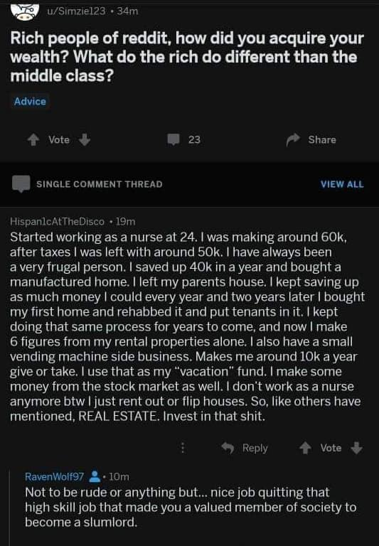

note that whenever I say huge amounts of wealth can’t be gained through ethical methods this is what I’m talking about
To explain just a hair more, if a landlord can use someone’s rent to buy a new property, and use tenants in a new property to buy yet more property, it means every person who pays rent could have also eventually bought a property outright and not had to have such a constant drain. But, no renter could: for lack of upfront funds, for a lack of access due to racism or ableism or classism, for lack of trust given by financial institutions, etc. Put plainly, a landlord contributes no value or service but uses someone else’s funds to compound a landlord’s own riches and get more human livestock to bleed, simply because of a moment of permission granted by more powerful groups. How many people are suffering and struggling to keep an ex-nurse afloat in luxury? What is being contributed?
I’m not saying this is always true in practice, or that I think the current system is a wholly just state of affairs, but a landlord contributes a number of things:
- Landlords take on most of the burden of maintaining and improving the property, both financially and in terms of labor. A tenant has to keep the place clean and not damage things themselves through recklessness, but they don’t have to fix or replace anything in the house themselves (or with their money). Many/most landlords also are responsible for all external maintenance of the exterior of the house and yard. This is not trivial, especially for lower income people who might have a hard time finding the spare cash to (for example) replace a broken heater.
- Relatedly, the landlord will probably bring greater experience and expertise in maintaining properties, either through their years as landlords or through a management company they pay.
- The landlord takes on all the financial risk of owning the property (and, to be sure, all the upside as well). If the property’s value declines, and can only be sold for a loss, that’s on the landlord and the tenant is not stuck with the property. If a natural disaster damages or destroys the property, it’s on the landlord to figure things out financially. And so on.
- The landlord provides tenants with a living option that provides them flexibility in their lives. A tenant is only tied down financially to where they live for a year, or even less, and can move to another place, often in another city, without being tied down by a mortgage, or having to find a way to sell their property (which can often be a very long process, and again there’s no guarantee it won’t sell for a loss).
- The landlord provides a place to live (for rents, yes) for people who don’t want to or can’t own property, either because they don’t want to deal with the burdens of ownership, they want to move frequently, they are in a stage in life where they can’t afford a mortgage, etc.
Now, maybe instead you just want public housing rented out to people en masse, at least in principle I wouldn’t be opposed to that idea, but I think it’s wrong to say landlords provide nothing.
If only the wealthy and powerful knew they could count on defenses like yours, I’m sure they would finally feel safe venturing out of their castles to kiss us all!
That’s glib. I’ll rephrase: I agree that the original post imagines the landlord as a wholly valueless position in society and that this reading of the services provided by landlords oversimplifies the issue. But, honestly? Not by enough to matter.
Landlordship is, like, the literal definition of “rent-collecting” as a bullshit capitalism job. The fact that the incentive structure of the world directly and obviously favors transition from a clearly value-generating job like nursing into Ownership As Job Unto Itself, is an indictment of the incentive structure.
Also, and this may be a personal quirk: even as the sort of horrifying contrarian so prone to defending folk devils that I’m currently getting anon hate from some remarkably diverse points on the political spectrum I still don’t waste my time coming up with defenses of the wealthy. They don’t need it. Their position is so perfectly isolated from any consequence of criticism that, like, why bother?
The rich don’t need our help. They don’t need allies. They own everything, run everything, and this kinda defense is why noxious twitter leftists are so fond of “bootlicker” as a term of abuse. It just… isn’t that important to make sure that we all have a sufficiently positive regard for owners and middlemen.I mean, I don’t really see my response as some wholehearted defense of the rich. I am against the interests of the wealthy in my political views and voting and so on, and I even said I’m totally open to mass public housing in principle and that the current situation isn’t just.
I guess I disagree with you on how much it matters. I think for a left-liberal or leftist movement to be successful at attacking inequality, the power of the rich, and so on, it must have an accurate understanding of how the world works. How can you make a better system if you don’t understand the current one? And one thing I worry about in the anti-wealthy populist rhetoric is that it basically frames all the rich as parasites who contribute nothing (I’ve seen similar rhetoric about how CEOs just sit around playing golf all day). That is a fundamental misunderstanding of the current system, even if you buy into a leftist critique of the wealthy, and creates a radically simplified view of how the world works that leads to bad policy.
This oversimplified understanding is how you get horribly misguided policy proposals like Bernie’s recent BEZOS Act, which doesn’t think seriously about how the world works in a nuanced way and thus (if enacted) would arguably hurt the poor, hurt states with more generous social safety nets, etc. contrary to it’s populist anti-rich intentions.
Shorter marcusseldon: because you were wrong.
If your political praxis can’t handle people saying true things, then you’ve got a lot of problems both in terms of building power, and figuring out what to do with power.
Also this is a fucking platform for entertainment and time-wasting not the Beating Heart of the Revolution. Like you can shoot the shit about what landlords do because it’s fun and it keeps your mind in shape, and NOT worry about “taking attention away from the more important message of rich people r scum.” Yeah, don’t interrupt protest speeches with endless nuance, but whatever you want to do at home on a website known primarily for furry fan art and steven universe fanfic, is up to you you know?
Actually, I encourage you all to go ahead and interrupt protest speeches with endless nuance.
If you do it enough, maybe there won’t be any more protest speeches, and our discourse and our political action can move to venues that aren’t antithetical to nuance.